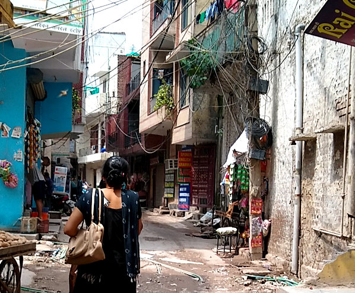

Stuff in India
Please contact me with better ideas for a name!
A Haircut
July 22, 2019

I had a lot of time to kill at the train station. I thought my train was leaving at 5, but it turned out to be 11! No matter though, because I'll be damned if there's a part of this country without something interesting or crazy or new.
The neighborhood near the station was pretty ah... hmm... authentic? Rough-and-tumble? There was a lot going on.
I came to a little 80 square foot barber shop, and was welcomed to a chair. The guy didn't speak any English nor I any Hindi. Grunts gestures and facial expressions did pretty good. Anyway the point wasn't the hair, but getting to sit down and chill, and to meat someone and see what was going on.
I wandered around a bunch more, and exchanged hinglish/engli with a women. She asked for a selfie, so it was only fair I got one too.

A First Tour
with some lovely hostel-mates, July 21 2019

I left the hotel in Mahipalpur for a hostel in Saket, a middle-class neighborhood closer to the city-- and very near a lovely metro stop. The hostel had a nice common area where I met Anand, who was in town to help out friends of his old roomate, Hanna and Solomon from Ethiopia (all three pictured above). They were kind enough to invite me on their tour of some local parks and the Delhi art district.

We had an awesome morning, and buy the time the sweltering afternoon heat began, I was napping on the terrace of the hostel, and working on the blog.
Later in the afternoon I went with Maja and Olvie (two other hostel-mates) to check out little Tibet-- only after getting completely soaked in a good ol' monsoon. On the auto ride there, (you won't believe it) I shivered! I was actually pretty cold! For dinner Solomon made an ethiopian dish which was really really good!
I'm pretty sold on the whole hostel travel style. So many awesome people if you force yourself to say hello!
Unreal Mangos
July 20 2019

I got like ten mangos for 100 ruppees, and they are CRAZY good. They are so sweet, and juicy, and flavorful. They alone make a 1000 dollar round trip worth it. Just come by next weekend and get some awesome mangos!
Off of the spaceship
And onto planet India, July 19, 2019
There's so much going on here! Check out this street in Mahipalpur (small neighborhood near Delhi airport). Power lines and improvised drainage are indicative of much over here!
I stayed one night in this village, and have since moved to a more developed part of Delhi. I'm glad I started here though. It really felt like another planet! Now that I've founf the paved streets and the airconditioned cafes it feels more like planet Earth though!